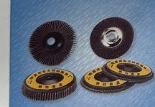
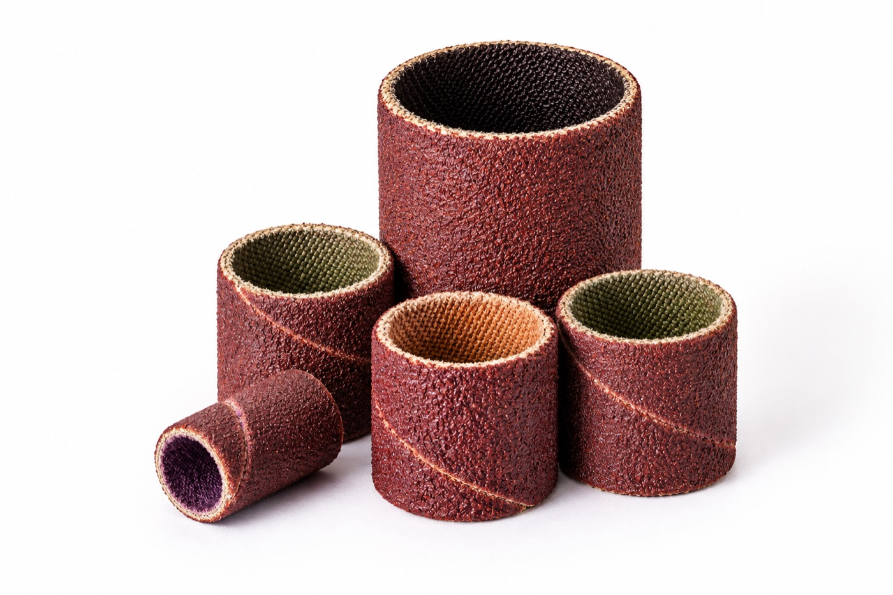

1
平面砂布轮系列
Flap Disc Series · 粗磨/重切削特征：圆形平面砂布轮，砂布片叠在背板上，中心有安装孔。
当前网站：空位

你们修图批次 · 带黄色标签的平面砂布轮
修图后（推荐）

Wikimedia · 白底高清平面砂布轮
网图 CC BY-SA

Wikimedia · 侧面角度
网图 公有领域

站内已有旧图 springness-plate.png
站内素材
2
钢纸磨片
Steel Paper Grinding Piece · 粗磨/重切削特征：薄圆盘、钢纸/纤维背基，表面覆磨料，用于角磨机。
当前网站：空位

站内已有旧图 steel-paper.png（已标注钢纸磨片）
站内素材（推荐）
修图批次与网图库中暂无更合适的钢纸磨片，建议补拍或单独提供。
3
无纺布拉丝轮
Non-Woven Wire Wheel · 抛光/精饰特征：筒形/鼓形，无纺布+磨料，中心多孔，用于金属拉丝。
当前网站：空位

修图批次 · 红色鼓形拉丝轮
修图后（请确认品类）
若 3-A 不对，请上传你们自己的无纺布拉丝轮照片。
4
砂布卷
Emery Cloth Roll · 抛光/精饰特征：卷状砂布，可撕下使用，常见棕色涂附砂布。
当前网站：空位

修图批次 · 卷状砂布（请确认）
修图后

Wikimedia · 卷状砂布实物
网图 CC（推荐备选）

曾误挂：实际是砂圈，不是砂布卷
品类不对 · 勿选
5
无纺布磨盘
Non-Woven Disc · 清理/去毛刺特征：圆形无纺布磨盘，用于去毛刺、表面修整。
当前网站：空位

修图批次 · 粉色圆形磨盘（请确认是否为无纺布磨盘）
修图后
若 5-A 不对（可能是陶瓷磨盘），请补拍无纺布磨盘照片。
6
附柄碗形磨料丝刷
Mounted Bowl Brush · 清理/去毛刺特征：带金属柄，刷头呈碗形/杯形，磨料丝或尼龙磨料丝。
当前网站：空位